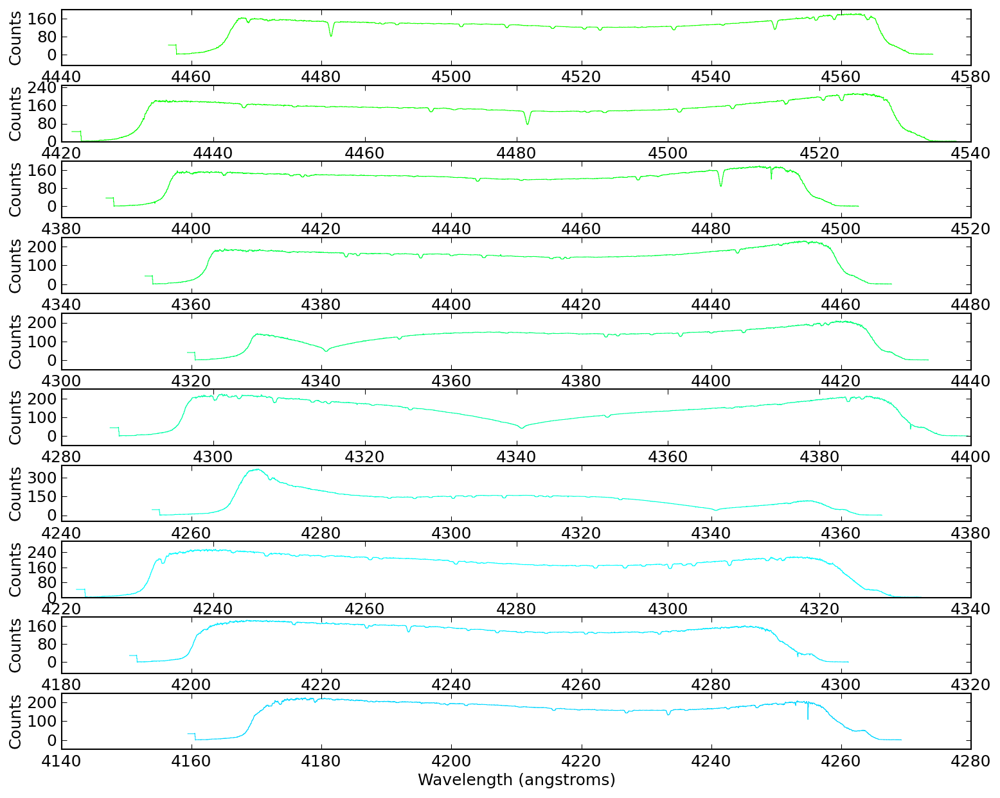

Optical Plotting - Echelle spectrum of Vega (in color!)¶
import pyspeckit
from pylab import *
import wav2rgb
speclist = pyspeckit.wrappers.load_IRAF_multispec('evega.0039.rs.ec.dispcor.fits')
for spec in speclist:
spec.units="Counts"
SP = pyspeckit.Spectra(speclist)
SPa = pyspeckit.Spectra(speclist,xunits='angstroms',quiet=False)
SP.plotter(figure=figure(1))
SPa.plotter(figure=figure(2))
figure(3)
clf()
figure(4)
clf()
#clr = [list(clr) for clr in matplotlib.cm.brg(linspace(0,1,len(speclist)))]
clr = [wav2rgb.wav2RGB(c) + [1.0] for c in linspace(380,780,len(speclist))][::-1]
for ii,(color,spec) in enumerate(zip(clr,speclist)):
spec.plotter(figure=figure(3), clear=False, reset=False, color=color, refresh=False)
fig4=figure(4)
fig4.subplots_adjust(hspace=0.35,top=0.97,bottom=0.03)
spec.plotter(axis=subplot(10,1,ii%10+1), clear=False, reset=False, color=color, refresh=False)
spec.plotter.axis.yaxis.set_major_locator( matplotlib.ticker.MaxNLocator(4) )
if ii % 10 == 9:
spec.plotter.refresh()
spec.plotter.savefig('vega_subplots_%03i.png' % (ii/10+1))
clf()
spec.plotter.refresh()


